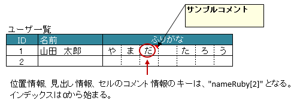

-
@Target(value={METHOD,FIELD}) @Retention(value=RUNTIME) @Documented public @interface XlsArrayColumns
アノテーションXlsHorizontalRecordsやXlsVerticalRecordsで指定されたレコード用のクラスにおいて、 隣接する連続したカラムを、配列やListにマッピングします。基本的な使い方
属性
columnName()で、見出しとなるセルのラベルを指定します。属性
size()で連続するセルの個数を指定します。
見出しとなるカラムは、結合している必要があります。セルが見つからない場合はエラーとなりますが、属性
optional()を'true'とすることで無視して処理を続行します。配列または、
Collection(List/Set)にマッピングします。Collection型のインタフェースを指定している場合、読み込み時のインスタンスは次のクラスが指定されます。Listの場合、ArrayListがインスタンスのクラスとなります。Setの場合、LinkedHashSetがインスタンスのクラスとなります。
public class SampleRecord { @XlsColumn(columnName="ID") private int id; @XlsColumn(columnName="名前") private String name; @XlsArrayColumns(columnName="ふりがな", size=10)) private List<String> nameRuby; }
基本的な使い方
書き込み時に配列・リストのサイズが不足、または余分である場合
アノテーションXlsArrayOptionを指定することで、書き込み時のセルの制御を指定することができます。属性
XlsArrayOption.overOpration()で、書き込み時にJavaオブジェクトの配列・リストのサイズに対して、属性size()の値が小さく、足りない場合の操作を指定します。属性
XlsArrayOption.remainedOperation()で、書き込み時にJavaオブジェクトの配列・リストのサイズに対して、属性size()の値が大きく、余っている場合の操作を指定します。public class SampleRecord { @XlsColumn(columnName="ID") private int id; @XlsColumn(columnName="名前") private String name; @XlsArrayColumns(columnName="ふりがな", size=6) @XlsArrayOption(overOperation=OverOperation.Error, remainedOperation=RemainedOperation.Clear) private List<String> nameRuby; }
書き込み時の制御を行う場合
位置情報／見出し情報を取得する際の注意事項
マッピング対象のセルのアドレスを取得する際に、フィールドMap<String, CellPosition> positionsを定義しておけば、 自動的にアドレスがマッピングされます。
通常は、キーにはプロパティ名が記述（フィールドの場合はフィールド名）が入ります。
アノテーションXlsArrayColumnsでマッピングしたセルのキーは、<プロパティ名>[<インデックス>]の形式になります。同様に、マッピング対象の見出しを取得する、フィールドMap<String, String> labelsへのアクセスも、 キーは<プロパティ名>[<インデックス>]の形式になります。
ただし、見出し情報の場合は、全ての要素が同じ値になるため、従来通りの <プロパティ名> でも取得できます。public class SampleRecord { // 位置情報 private Map<String, CellPosition> positions; // 見出し情報 private Map<String, String> labels; @XlsColumn(columnName="ID") private int id; @XlsColumn(columnName="名前") private String name; @XlsArrayColumns(columnName="ふりがな", size=6) private List<String> nameRuby; } // 位置情報・見出し情報へのアクセス SampleRecord record = ...; CellPosition position = record.positions.get("nameRuby[2]"); String label = recrod.labeles.get("nameRuby[2]"); // 見出し情報の場合、従来通りのインデックスなしでも取得できる String label = recrod.labeles.get("nameRuby");位置情報・見出し情報の取得
見出しを正規表現、正規化して指定する場合
シートの構造は同じだが、ラベルのセルが微妙に異なる場合、ラベルセルを正規表現による指定が可能です。
また、空白や改行を除去してラベルセルを比較するように設定することも可能です。正規表現で指定する場合、アノテーションの属性の値を
/正規表現/のように、スラッシュで囲みます。- スラッシュで囲まない場合、通常の文字列として処理されます。
- 正規表現の指定機能を有効にするには、システム設定のプロパティ
Configuration.setRegexLabelText(boolean)の値を trueに設定します。
ラベセルの値に改行が空白が入っている場合、それらを除去し正規化してアノテーションの属性値と比較することが可能です。
- 正規化とは、空白、改行、タブを除去することを指します。
- ラベルを正規化する機能を有効にするには、、システム設定のプロパティ
Configuration.setNormalizeLabelText(boolean)の値を trueに設定します。
これらの指定が可能な属性は、
columnName()です。// システム設定 XlsMapper xlsMapper = new XlsMapper(); xlsMapper.getConfiguration() .setRegexLabelText(true) // ラベルを正規表現で指定可能にする機能を有効にする。 .setNormalizeLabelText(true); // ラベルを正規化して比較する機能を有効にする。 // レコード用クラス public class SampleRecord { @XlsColumn(columnName="ID") private int id; // 正規表現による指定 @XlsColumn(columnName="/名前.+/") private String name; // 正規表現による指定 @XlsArrayColumns(columnName="/ふりがな.+/", size=10) private List<String> nameRuby; }- 導入されたバージョン:
- 2.0
- 作成者:
- T.TSUCHIE
-
-
必須要素のサマリー
必須要素 修飾子とタイプ 必須要素と説明 StringcolumnName見出しとなるカラム名を指定します。intsize連続するセルの個数を指定します。
-
任意要素のサマリー
任意要素 修飾子とタイプ 任意要素と説明 ProcessCase[]cases適用するケースを指定します。Class<?>elementClass配列またはリスト要素の値のクラスを指定します。booleanelementMerged値のセルが結合している場合、それを考慮するかどうか指定します。booleanoptional属性columnName()で指定したカラム（セル）が見つからない場合、trueと設定すると無視して処理を続行します。
-
-
-
要素の詳細
-
columnName
public abstract String columnName
見出しとなるカラム名を指定します。システム設定により、正規表現による指定や正規化（改行、空白、タブの削除）による比較の対象となります。
- 戻り値:
- カラム名
-
-
-
elementClass
public abstract Class<?> elementClass
配列またはリスト要素の値のクラスを指定します。省略した場合、定義されたたGenericsの情報から取得します。
- デフォルト:
- java.lang.Object.class
-
-
-
elementMerged
public abstract boolean elementMerged
値のセルが結合している場合、それを考慮するかどうか指定します。 この値により、属性size()の指定方法が変わります。セル結合されている場合は、結合後の個数を指定します。
- trueの場合は、結合されているセルを1つのセルとしてマッピングします。
- falseの場合は、結合されていても解除した状態と同じマッピング結果となります。
ただし、書き込む際には、結合が解除されます。
@XlsSheet(name="Users") public class SampleSheet { @XlsColumn(columnName="ID") private int id; @XlsColumn(columnName="名前") private String name; // elementMerged=trueは初期値なので、省略可 @XlsArrayColumns(columnName="連絡先", size=3) private List<String> contactInfos; }
結合したセルをマッピングする場合
- 戻り値:
- trueの場合、値のセルが結合されていることを考慮します。
- デフォルト:
- true
-
-
-
optional
public abstract boolean optional
属性columnName()で指定したカラム（セル）が見つからない場合、trueと設定すると無視して処理を続行します。falseを指定し、セルが見つからない場合は、例外
CellNotFoundExceptionがスローされます。- 戻り値:
- trueの場合、該当するカラム（セル）が見つからないときは無視して処理を続行します。
- デフォルト:
- false
-
-
-
cases
public abstract ProcessCase[] cases
適用するケースを指定します。- 戻り値:
- 何も指定しない場合は全てのケースに適用されます。
- デフォルト:
- {}
-
-